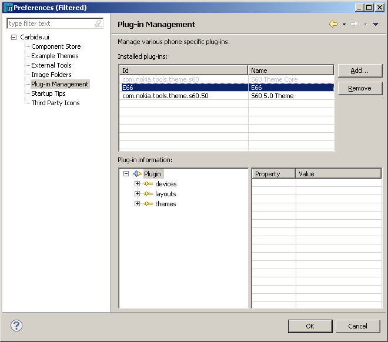
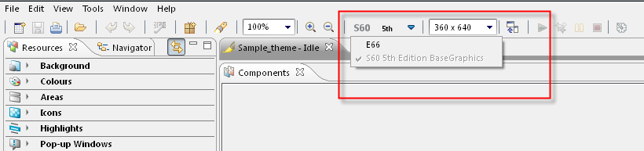

Figure:
Installed Plug-in
- Now, you can
create a new theme and change the plug-in
from the "Switch
platform"
option from the tool bar. This plug-in while apply changes to your new
theme and can be packaged and transfered to your mobile.

Figure:
Switch Platform